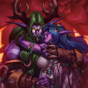
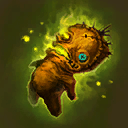
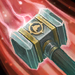
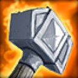
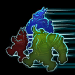

Amplification
Increases Spell Power and Attack Damage of ALL enemies by 15%.
Bad Bargain
Increases Death Respawn time of your team by 50%.
Bad Mannerism
Enemy Heroes will spam Hearthstone, sprays, and voice lines at you.
Blindfolded
Reduces your vision range by 2.
Chained Down
Increases the duration of ALL Stuns, Slows, Roots, and Silences against you and allied Heroes by 25%.
Chrono Boost
Increases Movement Speed of ALL enemies by 10% and Ability recharge rate by 25%.
Faulty Catapults
Reduces Attack Speed of allied Catapults by 50% and Attack Range by 3.

Common
Tyrande
Night Elf Bond
Malfurion follows you around. If he dies, you die.
Malfurion gains bonus Health equal to 50% of your maximum Health and has 30% increased Movement Speed and infinite Mana.
Malfurion does not gain talents and does not scale with levels.
Skips the next Curse.
No Fountains
All your Healing Fountains are destroyed.
Passive Advantage
Increases passive Experience for the enemy Team by 25%.
Resilience
Increases maximum Health of ALL enemies by 20%.

Common
Nazeebo
Rushed Ritual
Reduces Voodoo Ritual's damage and duration by 50%.
Skips the next Curse.
Slow Start
Your AI teammates are Time Stopped for 60 seconds.

Common
Thrall
Slowfury
Reduces Windfury's Attack Speed bonus by 50%.
Skips the next Curse.

Common
Muradin
Toy Hammer
Storm Bolt has a 50% chance to not Stun enemies.

Common
The Lost Vikings
Truly Lost
Reduces your vision range to 4.
Skips the next Curse.
Where's Illidan?
Every 50 to 250 seconds, Maiev appears for a brief moment and casts Containment Disc on you.
Debilitating Shots
Enemy Core, Fort, and Keep attacks reduce Attack Speed and Movement Speed by 40% for 2.5 seconds.
Fortifications
Several enemy Towers appear around the map. These Towers reveal everything in range.
Additional stacks increases the amount of Towers on the map.
Glass
Reduces your maximum Health by 25%.
Skips the next Curse.
Injury
You no longer naturally regenerate Health.
Mass Cloak
Enemy Heroes gain Stealth when out of combat for 3 seconds.
Overcharged Shields
Increases the maximum Shields of the enemy's Core by 50% and the recharge rate by 15%.
Possession
Enemy leader Minions convert a nearby allied Minion to their side every 30 seconds.
Additional stacks reduce the cooldown by 10 seconds.
Relentless
Reduces the duration of ALL Stuns, Slows, Roots, and Silences against enemy Heroes by 15%.
Shredder
Increases the Armor reduction from enemy Structures by 5.
Toxic Field
Spawns 2 Toxic Nests per second at random locations on the map. Toxic Nests last for 90 seconds.
Additional stacks increase the spawn rate of Toxic Nests by 2 per second.
Alterac's Legacy
Enemy Keeps and Keep Towers have 20 Armor for each intact enemy Fort.
Block
Every 5 seconds, enemy Heroes gain 75 Physical Armor against the next Heroic Basic Attack.
Stores up to 2 charges.
Dodge
Enemy Heroes have a 2% chance to take no damage.
Efficient Guns
Increases enemy Structures' Attack Speed by 15% and Attack Range by 1.
Does not affect the enemy Core.
Expensive Attacks
Basic Attacks consume 4 Mana.
Explosive End
Upon dying, enemy Heroes drop 5 grenades that explode after 0.75 seconds, each dealing 250 damage to nearby enemies. Deals 75% less damage to Structures.
Infernal Punishment
Reduces the number of Shrine Minions required to summon a Punisher for the enemy team by 15.
Enemy Punisher gains Arcane, Frozen, and Mortar Abilities and deals 25% increased damage.
Last Moments
Last Rites is cast on you when your Health drops below 35%.
This effect has a 300 second cooldown.
Additional stacks reduce the cooldown by 60 seconds.
Life Steal
Enemy Heroes heal for 15% of damage dealt.
Neithis's Wrath
Reduces the number of gems required to summon Webweavers for the enemy team by 20 and turn-in cost no longer increases.
Enemy Webweavers cast Abilities 75% faster and summon 2 additional spiders.
Overleveled
Increases the level of the enemy Team by 1 now and at the start of every game.
Skips the next Curse.
Raena's Knight
Shrines under your team's control become neutral after 45 seconds. Neutral Shrines become enemy-controlled after 45 seconds.
Increases enemy Dragon Knight's duration by 50% and reduces Dragon's Breath's cooldown by 3 seconds.
Raven Lord's Favor
Reduces the number of tributes required for a curse for the enemy team by 1.
Your team is cursed for 50% longer.
Spell Shield
Every 30 seconds, enemy Heroes gain 50 Spell Armor against the next Ability and subsequent Abilities for 3 seconds.
Ammunition
Allied Towers, Forts, and Keeps have limited Ammunition, with each attack consuming one ammo. Once a structure runs out of ammo, it will be unable to attack.
Structures replenish 2 ammo every 30 seconds.
Skips the next Curse.
Divine Intervention
Divine Palm is cast on enemy Heroes when their Health drops below 25%.
This effect has a 300 second cooldown per enemy Hero.
Additional stacks reduce the cooldown by 60 seconds.
Grenadier
Grants the ability to throw a Frag Grenade, Particle Grenade, or a Biotic Grenade every 8 seconds to a random enemy Hero.
Additional stacks grant this effect to 1 additional enemy Hero.
Many Heroics
Enemy Heroes gain access to all of their Heroic Abilities.
Memory Shortage
Reduces AI difficulty level of your allies by 1.
Additional stacks reduce the difficulty level further, down to Beginner.
All-Rounder
Increases the Attack Speed, maximum Health, and damage dealt of enemy Heroes by 15%.
Each stack skips the next Curse.
Back to 2019
Enemy Minions no longer drop Experience Globes. Gain experience when an enemy Minion dies within 12 range of you and allied Heroes.
Skips the next Curse.
Camera Zoom
Permanently zoom in your camera by 15%.
League of Heroes
Increases your team's passive Experience gain by 10%. Experience is no longer shared between your Team.
Skips the next 2 Curses.
No Minimap DLC
Hides your Minimap.
Talent Disadvantage
Enemy Heroes gain access to all of their level 1 talents.
Additional stacks grants access to all talents in the next talent tier, excluding Heroics.
Each stack skips the next Curse.
No curses matched the current filter.